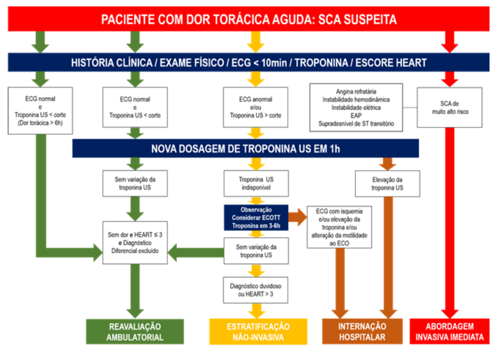
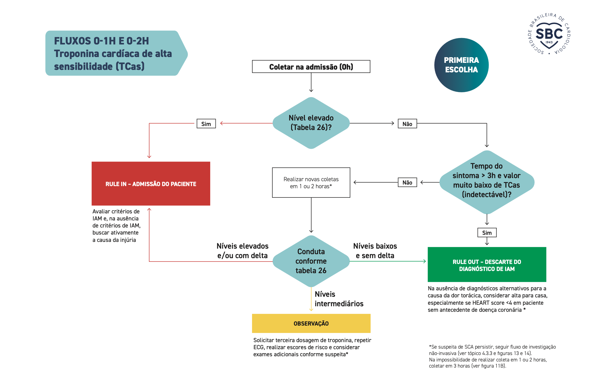
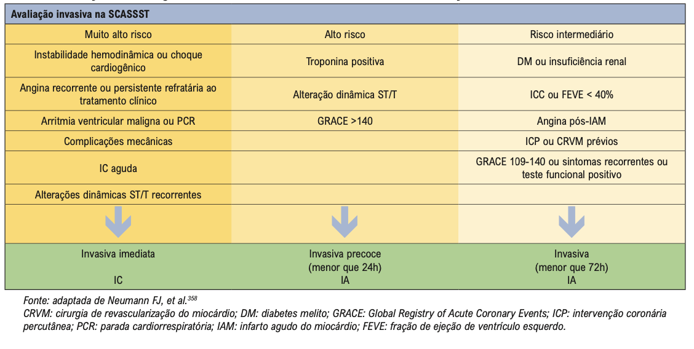
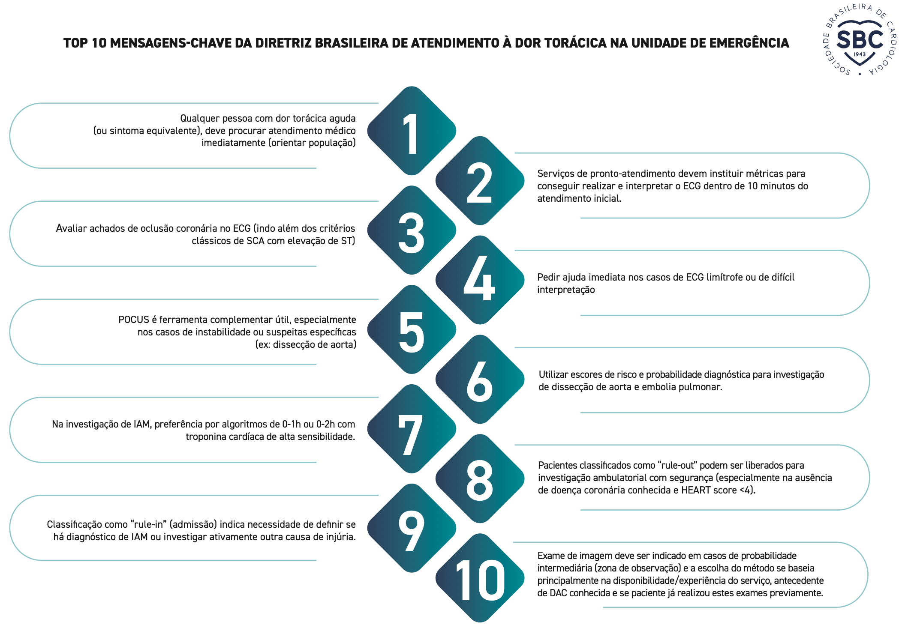

Estratificação de risco
da dor torácica na
emergência
Quem vai para casa, quem vai para a unidade coronária, quem vai para o cateterismo — e quando.
Prof. Wilton F. Gomes
Medicina · 8º período · Atividade Acadêmica · 2026-2
Por que estratificar?
Muito baixo risco
Identificar quem pode ter alta segura e seguir a investigação no ambulatório.
Alto risco
Identificar quem precisa de estratégia invasiva — e com que urgência.
Prognóstico
Prever a evolução para definir onde internar, quanto monitorar e quanto tratar (inclusive o risco de sangrar).
Dor torácica responde por milhões de atendimentos de emergência por ano;
a minoria é SCA — o desafio é não mandar para casa quem infarta e não internar todo mundo.
Cinco perguntas na sala de emergência
É infarto?
ECG em 10 min · troponina ultrassensível 0/1 h
Pode ir para casa?
HEART + troponina
Quão grave está agora?
Killip
Qual o risco de eventos — e de sangrar?
TIMI · GRACE · CRUSADE / ARC-HBR
Cateterismo: quem e quando?
Imediato · precoce · seletivo
Pontada no peito há 4 horas
Dor em pontada no hemitórax esquerdo, piora à inspiração profunda, iniciada há 4 h.
PA 128×78 mmHg · FC 76 bpm · exame físico normal.
ECG: ritmo sinusal, normal.
hs-cTnT na admissão: 3 ng/L (referência: até 14 ng/L).
Qual a conduta?
Guarde o seu voto — a resposta vem depois da troponina e do HEART.
Troponina ultrassensível: o valor e a variação
A ultrassensível detecta concentrações 10–100× menores; o percentil 99 fica muito abaixo do limite da troponina convencional.
Na chegada precoce o 1º valor pode ser normal — o delta em 1 h denuncia o IAM.
A convencional só “positiva” horas depois: daí o antigo “repetir em 6–9 h”.
Algoritmo 0/1 h — troponina T ultrassensível
Referência (percentil 99) da Elecsys hs-cTnT: até 14 ng/L. Pontos de corte do algoritmo para esse ensaio (ESC 2023). Cada ensaio tem os seus — use os do seu laboratório. A SBC 2025 aceita 0/1 h ou 0/2 h como primeira escolha.
HEART score — clique para calcular
MACE em 6 semanas (IAM, revascularização ou morte)
HEART + troponina = decisão
HEART ≤ 3 + IAM descartado (0/1 h)
Alta com reavaliação ambulatorial.
Baixo risco ≈ 1/3 a 1/2 dos pacientes com dor torácica — economia de leitos, exames e tempo.
HEART ≥ 4 ou dúvida diagnóstica
Não é alta direta: estratificação não invasiva (angio-TC ou teste funcional com imagem), na internação ou em observação.
O HEART foi derivado com troponina convencional; hoje entra depois do algoritmo de troponina ultrassensível (como no fluxograma da SBC 2025).
Pontada no peito há 4 horas
História pouco suspeita 0 · ECG normal 0 · Idade < 45 0 · 1 fator de risco 1 · Troponina normal 0
Classificação de Killip
| Classe | Achado clínico |
|---|---|
| I | Sem sinais de congestão |
| II | Estertores em bases, B3, turgência jugular |
| III | Edema agudo de pulmão (estertores > metade dos campos) |
| IV | Choque cardiogênico |
Mortalidade hospitalar na série original (n = 250, era pré-reperfusão)
Só exame físico, à beira do leito, em 1 minuto. Killip ≥ II pesa no GRACE e contraindica betabloqueador na fase aguda.
TIMI risk score — 1 ponto cada · clique para marcar
0–2 baixo · 3–4 intermediário · ≥ 5 alto. Simples de memorizar; menos discriminativo que o GRACE.
Morte, IAM ou revascularização urgente em 14 dias
GRACE — o escore mais acurado
8 variáveis da admissão
Idade · FC · PA sistólica · creatinina
Killip · parada cardíaca na admissão
Desvio de ST · marcador de necrose elevado
Precisa de calculadora (app GRACE 2.0, MDCalc). Prevê mortalidade hospitalar e em 6 meses.
Risco hemorrágico também se estratifica
Sangramento maior na SCA aumenta mortalidade tanto quanto um novo IAM.
CRUSADE: Ht, ClCr, FC, sexo, IC, doença vascular, DM, PAS.
ARC-HBR: define quem é alto risco de sangramento por critérios clínicos simples — próximo slide.
Na prática: acesso radial, dose ajustada à função renal e escolha do antiplaquetário/duração da DAPT.
Sangramento maior intra-hospitalar por faixa de CRUSADE
ARC-HBR — alto risco de sangramento — clique nos critérios
Dor em repouso, diabética, 72 anos
2 episódios de dor em aperto em repouso nas últimas 24 h; o último há 2 h.
PA 150×90 · FC 84 · pulmões limpos. Creatinina 1,3.
ECG: infra de ST 1 mm em V4–V6.
hs-cTnT: 0 h = 38 · 1 h = 61 ng/L (referência: até 14 ng/L).
TIMI 6 (idade, ≥ 3 FR, AAS, ≥ 2 episódios, ST, marcador) → 40,9%
GRACE ≈ 160 (> 140) → alto risco
Qual a conduta?
Antes de revelar: calcule o TIMI no slide anterior.
Medidas iniciais — o que mudou
Oxigênio atualizado
Só se SatO₂ < 90%. Rotina sem hipoxemia não traz benefício (DETOX₂).
Nitrato
Alívio da dor. Evitar se PAS < 90, IAM de VD ou uso de inibidor de PDE-5.
Morfina
Não de rotina: atrasa a absorção do P2Y12 oral. Reservar para dor refratária.
AAS
Dose de ataque assim que possível, depois manutenção 75–100 mg/dia.
Inibidor de P2Y12 atualizado
Sem pré-tratamento rotineiro se o cateterismo for < 24 h: dar após conhecer a anatomia.
Anticoagulação
Enoxaparina ou fondaparinux; heparina não fracionada na sala de hemodinâmica.
Betabloqueador ressalva
Oral nas primeiras 24 h só sem IC/Killip ≥ II, baixo débito, risco de choque ou BAV.
Estatina
Alta intensidade precoce, independente do LDL basal.
Onde: unidade coronária / monitorização contínua · Depois: definir a estratégia — conservadora ou invasiva.
Estratégia invasiva × seletiva
Invasiva
A anatomia define o tratamento: clínico, ICP ou cirurgia.
Discrimina na hora:
• sem lesão obstrutiva (até 20%)
• tronco / multiarterial complexo (até 20%)
Seletiva
Teste não invasivo de isquemia primeiro.
Cateterismo só se isquemia importante, recorrência ou piora.
Redução absoluta de morte CV ou IAM em 5 anos com estratégia invasiva de rotina
Quanto maior o risco, maior o benefício da estratégia invasiva.
Quem e quando
Imediata · < 2 h
MUITO ALTO RISCO
• Instabilidade hemodinâmica / choque
• Dor recorrente ou refratária
• Arritmia maligna / PCR
• Complicação mecânica
• IC aguda pela SCA
• ST dinâmico recorrente (supra intermitente)
Precoce · < 24 h
ALTO RISCO
• IAMSSST confirmado (rule-in)
• Alterações dinâmicas de ST/T
• Supra de ST transitório
• GRACE > 140
Sem critério de alto risco
AVALIAR SUSPEITA
• Suspeita alta de AI → invasiva durante a internação
• Suspeita baixa → seletiva, guiada por teste não invasivo
Dor que não passa e falta de ar
PA 104×62 · FC 112 · SatO₂ 86% em ar ambiente.
Estertores até os ápices bilateralmente.
ECG: infra de ST difuso + supra em aVR.
O₂ indicado (SatO₂ < 90%). Sem betabloqueador. Não espere a 2ª troponina.
Classe de Killip e conduta?
Qual exame não invasivo?
Acurácia para DAC anatomicamente significativa (meta-análise; referência = cateterismo)
Angio-TC: maior sensibilidade e ótimo VPN → exclui DAC; avalia anomalias e, com protocolo, aorta e TEP. Limites: FC alta, arritmia, calcificação intensa, DRC.
Funcionais com imagem (eco de estresse, cintilografia, RM cardíaca): localizam e quantificam isquemia; RM também faz o diferencial (miocardite).
Ergométrico: disponível e barato, mas menos acurado; não interpretável com BRE, pré-excitação, marca-passo ou ST basal alterado. Duke score ainda dá prognóstico.
Do pronto-socorro à conduta
SBC 2025 — fluxo da dor torácica aguda

SBC 2025 — fluxos 0-1 h e 0-2 h

SBC 2021 — avaliação invasiva na SCASSST

SBC 2025 — 10 mensagens-chave

Cinco mensagens
ECG em 10 min; supra de ST ou instabilidade pulam a estratificação.
Troponina ultrassensível em 0/1 h (ou 0/2 h): o delta vale tanto quanto o valor.
HEART ≤ 3 + IAM descartado → alta com seguimento ambulatorial.
Killip, GRACE (> 140) e critérios clínicos definem quando cateterizar: < 2 h ou < 24 h.
O₂ só se SatO₂ < 90% · sem morfina de rotina · sem pré-tratamento rotineiro com P2Y12 · estratifique também o sangramento.
Para estudar
- Byrne RA et al. 2023 ESC Guidelines for the management of acute coronary syndromes. Eur Heart J 2023;44:3720-826.
- Rao SV et al. 2025 ACC/AHA/ACEP/NAEMSP/SCAI Guideline for the Management of Patients With Acute Coronary Syndromes. Circulation 2025.
- Sociedade Brasileira de Cardiologia. Diretriz Brasileira de Atendimento à Dor Torácica na Unidade de Emergência — 2025. Arq Bras Cardiol 2025.
- Nicolau JC et al. Diretrizes da SBC sobre Angina Instável e IAM sem Supradesnível do ST — 2021. Arq Bras Cardiol 2021;117:181-264.
- Six AJ, Backus BE, Kelder JC. Chest pain in the emergency room: value of the HEART score. Neth Heart J 2008;16:191-6.
- Backus BE et al. A prospective validation of the HEART score for chest pain patients at the emergency department. Int J Cardiol 2013;168:2153-8.
- Killip T, Kimball JT. Treatment of myocardial infarction in a coronary care unit. Am J Cardiol 1967;20:457-64.
- Antman EM et al. The TIMI risk score for unstable angina/non-ST elevation MI. JAMA 2000;284:835-42.
- Granger CB et al. Predictors of hospital mortality in the GRACE registry. Arch Intern Med 2003;163:2345-53.
- Subherwal S et al. Baseline risk of major bleeding in NSTEMI: the CRUSADE bleeding score. Circulation 2009;119:1873-82.
- Urban P et al. Defining high bleeding risk in patients undergoing PCI (ARC-HBR). Circulation 2019;140:240-61.
- Fox KAA et al. Long-term outcome of a routine versus selective invasive strategy in NSTE-ACS. J Am Coll Cardiol 2010;55:2435-45.
- Hofmann R et al. Oxygen therapy in suspected acute myocardial infarction (DETO2X). N Engl J Med 2017;377:1240-9.
- Knuuti J et al. The performance of non-invasive tests to rule-in and rule-out significant coronary artery stenosis. Eur Heart J 2018;39:3322-30.
Material da aula e contato
Slides, resumo em PDF, calculadoras e quiz
Prof. Wilton Gomes
Instagram · LinkedIn · Lattes · WhatsApp · e-mailclique na área livre do slide avança · F tela cheia · Home/End início/fim
Q QR grande da votação · C QR da chamada · V mostra/esconde votos · H ajuda · pontinhos vermelhos (canto) = passos restantes